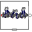

RevoluteRevolute joint (1 rotational degree-of-freedom, 2 potential states, optional axis flange) |
Diagram
{kind=link}
Information
This information is part of the Modelica Standard Library maintained by the Modelica Association.
Joint where frame_b rotates around axis n which is fixed in frame_a. The two frames coincide when the rotation angle "phi = 0".
Optionally, two additional 1-dimensional mechanical flanges (flange "axis" represents the driving flange and flange "support" represents the bearing) can be enabled via parameter useAxisFlange. The enabled axis flange can be driven with elements of the Modelica.Mechanics.Rotational library.
In the "Advanced" menu it can be defined via parameter stateSelect that the rotation angle "phi" and its derivative shall be definitely used as states by setting stateSelect=StateSelect.always. Default is StateSelect.prefer to use the joint angle and its derivative as preferred states. The states are usually selected automatically. In certain situations, especially when closed kinematic loops are present, it might be slightly more efficient, when using the StateSelect.always setting.
If a planar loop is present, e.g., consisting of 4 revolute joints where the joint axes are all parallel to each other, then there is no longer a unique mathematical solution and the symbolic algorithms will fail. Usually, an error message will be printed pointing out this situation. In this case, one revolute joint of the loop has to be replaced by a Joints.RevolutePlanarLoopConstraint joint. The effect is that from the 5 constraints of a usual revolute joint, 3 constraints are removed and replaced by appropriate known variables (e.g., the force in the direction of the axis of rotation is treated as known with value equal to zero; for standard revolute joints, this force is an unknown quantity).
In the following figure the animation of a revolute joint is shown. The light blue coordinate system is frame_a and the dark blue coordinate system is frame_b of the joint. The black arrow is parameter vector "n" defining the translation axis (here: n = {0,0,1}, phi.start = 45o).
Parameters (6)
| useAxisFlange |
Value: false Type: Boolean Description: = true, if axis flange is enabled |
|---|---|
| animation |
Value: true Type: Boolean Description: = true, if animation shall be enabled (show axis as cylinder) |
| n |
Value: {0, 0, 1} Type: Axis Description: Axis of rotation resolved in frame_a (= same as in frame_b) |
| cylinderLength |
Value: world.defaultJointLength Type: Distance (m) Description: Length of cylinder representing the joint axis |
| cylinderDiameter |
Value: world.defaultJointWidth Type: Distance (m) Description: Diameter of cylinder representing the joint axis |
| stateSelect |
Value: StateSelect.prefer Type: StateSelect Description: Priority to use joint angle phi and w=der(phi) as states |
Inputs (2)
| cylinderColor |
Default Value: Modelica.Mechanics.MultiBody.Types.Defaults.JointColor Type: Color Description: Color of cylinder representing the joint axis |
|---|---|
| specularCoefficient |
Default Value: world.defaultSpecularCoefficient Type: SpecularCoefficient Description: Reflection of ambient light (= 0: light is completely absorbed) |
Connectors (4)
| axis |
Type: Flange_a Description: 1-dim. rotational flange that drives the joint |
|
|---|---|---|
| support |
Type: Flange_b Description: 1-dim. rotational flange of the drive support (assumed to be fixed in the world frame, NOT in the joint) |
|
| frame_a |
Type: Frame_a Description: Coordinate system fixed to the joint with one cut-force and cut-torque |
|
| frame_b |
Type: Frame_b Description: Coordinate system fixed to the joint with one cut-force and cut-torque |
Components (6)
| world |
Type: World |
|
|---|---|---|
| R_rel |
Type: Orientation Description: Relative orientation object from frame_a to frame_b or from frame_b to frame_a |
|
| cylinder |
Type: Shape |
|
| fixed |
Type: Fixed Description: support flange is fixed to ground |
|
| internalAxis |
Type: InternalSupport |
|
| constantTorque |
Type: ConstantTorque |
Used in Examples (21)
|
Modelica.Mechanics.MultiBody.Examples.Elementary Simple double pendulum with two revolute joints and two bodies |
|
|
Modelica.Mechanics.MultiBody.Examples.Elementary Demonstrate how to initialize a double pendulum so that its tip starts at a predefined position |
|
|
Modelica.Mechanics.MultiBody.Examples.Elementary Demonstrate usage of ForceAndTorque element |
|
|
Modelica.Mechanics.MultiBody.Examples.Elementary Determine spring constant such that system is in steady state at given position |
|
|
Modelica.Mechanics.MultiBody.Examples.Elementary Demonstrate line force with two point masses using a JointUPS and alternatively a LineForceWithTwoMasses component |
|
|
Modelica.Mechanics.MultiBody.Examples.Elementary Simple pendulum with one revolute joint and one body |
|
|
Modelica.Mechanics.MultiBody.Examples.Elementary Simple spring/damper/mass system |
|
|
Modelica.Mechanics.MultiBody.Examples.Elementary Demonstrate the modeling of a user-defined gravity field |
|
|
Modelica.Mechanics.MultiBody.Examples.Loops Model of one cylinder engine |
|
|
Modelica.Mechanics.MultiBody.Examples.Loops Model of one cylinder engine with gas force and preparation for assembly joint JointRRP |
|
|
Modelica.Mechanics.MultiBody.Examples.Loops V6 engine with 6 cylinders, 6 planar loops and 1 degree-of-freedom |
|
|
Modelica.Mechanics.MultiBody.Examples.Loops One kinematic loop with four bars (with only revolute joints; 5 non-linear equations) |
|
|
Modelica.Mechanics.MultiBody.Examples.Loops One kinematic loop with four bars (with UniversalSpherical joint; 1 non-linear equation) |
|
|
Modelica.Mechanics.MultiBody.Examples.Loops One kinematic loop with four bars (with JointSSP joint; analytic solution of non-linear algebraic loop) |
|
|
Modelica.Mechanics.MultiBody.Examples.Loops Planar four bars mechanism with one kinematic loop (with RevolutePlanarLoopConstraint joint) |
|
|
Modelica.Mechanics.MultiBody.Examples.Loops Mechanism with three planar kinematic loops and one degree-of-freedom with analytic loop handling (with JointRRR joints) |
|
|
Modelica.Mechanics.MultiBody.Examples.Rotational3DEffects Demonstrates that a cylindrical body can be replaced by Rotor1D model |
|
|
Modelica.Mechanics.MultiBody.Examples.Rotational3DEffects Demonstrates usage of models Rotor1D and Mounting1D |
|
|
Modelica.Mechanics.MultiBody.Examples.Rotational3DEffects Demonstrates usage of model Rotor1D mounted on a moving body |
|
|
Modelica.Mechanics.MultiBody.Examples.Rotational3DEffects Demonstrates the usage of a BevelGear1D model and how to calculate the power of such an element |
|
|
Modelica.Mechanics.MultiBody.Examples.Constraints Body attached by one spring and revolute joint or constrained to environment |
Used in Components (9)
|
Modelica.Mechanics.MultiBody.Examples.Loops.Utilities Cylinder with rod and crank of a combustion engine |
|
|  |
Modelica.Mechanics.MultiBody.Examples.Loops.Utilities V6 engine with analytic loop handling |
|
Modelica.Mechanics.MultiBody.Examples.Loops.Utilities Model of one cylinder engine with gas force |
|
|
Modelica.Mechanics.MultiBody.Examples.Systems.RobotR3.Components Model of the mechanical part of the r3 robot (without animation) |
|
|
Modelica.Mechanics.MultiBody.Joints Cylindrical joint (2 degrees-of-freedom, 4 potential states) |
|
|
Modelica.Mechanics.MultiBody.Joints Universal joint (2 degrees-of-freedom, 4 potential states) |
|
|
Modelica.Mechanics.MultiBody.Joints Planar joint (3 degrees-of-freedom, 6 potential states) |
|
|
Modelica.Mechanics.MultiBody.Joints Ideal 3-dim. gearbox (arbitrary shaft directions) |
|
|
Modelica.Mechanics.MultiBody.Joints Joint (no mass, no inertia) that describes an ideal rolling wheel set (two ideal rolling wheels connected together by an axis) |